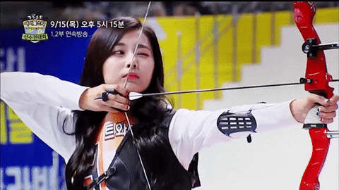

INFORMACION
TIRO CON ARCO

El Tiro con Arco es, sobre todo, un deporte de precisión, por lo que en principio su práctica requiere una gran capacidad de concentración, pero también una correcta preparación física.
En un torneo olímpico el arquero recorre durante sus desplazamientos a la diana una distancia aproximada de diez kilómetros y según datos de la FITA el tirador desarrolla un esfuerzo similar a ocho o nueve toneladas de tensión sobre el arco al lanzar las 300 flechas que utiliza durante los dos días que dura la competición.
El campo de tiro en el que se realizan las competiciones internacionales es una superficie plana, preferentemente de hierba, en la que se marca la línea de tiro desde donde se realizan los lanzamientos. Por delante de ésta se trazan unas líneas paralelas a las distancias de 30, 50, 70 y 90 metros en modalidad masculina, y a 30, 50, 60 y 70 metros en la femenina. En ellas se indican los puntos sobre los que se colocarán los centros de las dianas.
El 'K-pop' es un género de música coreana que está influenciado por el pop, el jazz, el hip-hop, el reggae y la electrónica, entre otros. Surgió a principios de los años 90 y desde ese momento ha tenido un crecimiento exponencial, creando un movimiento cultural seguido por millones de fans alrededor del mundo. Actualmente, este estilo de música se ha coronado como el más escuchado en YouTube en lo que va del 2020.
Existen diferentes grupos de 'K-pop' que han marcado tendencias en todo el mundo. Su estilo de música, moda, coreografía o cosmética son unas de las características que hacen de estos grupos un fenómeno distinto, innovador y revolucionario.
K-POP